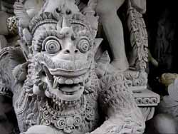
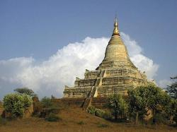

|
|
|

|

|
Cameron on Tour 1999
|
Last updated:
Mon Jun 7 06:59:18 PDT 1999
Date: Mon Jun 7 06:59:18 PDT 1999
So I got to talking to the manager of my hotel, and turns out his
uncle is the King of the Shan State, which is now a region in the
north east of Burma. I start talking with him a little more, and he
tells me some stories about him and his cousins running guns to Shan
rebels in the Jungle after the military took control of the country
in the 1960s. They used to store arms in his uncles Royal Palace, then
transport them to the rebels in a toyota pickup truck with a macine
gun welded to
the roof.
Alex (the hotel manager) eventually came out of the jungle, but his
uncle continued to manage the rebellion from
Chiang Mai, Thailand. Later, the uncle had to flee to Canada when
the Burmese army kept sending assasins into Thailand to kill him.
Alex says he thought they could win against the military,
but they were too ruthless. "They are trying to commit genocide against
the Shan, and unfortunately they seem to be succeeding."
Later, I see a group of civilians being marched at gunpoint into some
military building on the outskirts of town.
Date: Mon Jun 7 06:41:23 PDT 1999
Landmines & Monks in Rangoon
Today I visited the "Defense Services Museum", which is a huge PR
job for the most repressive military dictatorship on the planet.
Later in the day I visited Schwedagon Pagoda, which is the largest
Pagoda in Burma, and is a huge PR job for Budda. Talk about Yin
and Yan.
On the Yin side, the defense museum was well stocked with ammo, guns,
tanks spanning 40 years or so, several light aircraft, and a
landmine exhibit complete with cross section of a detonation device.
My favorite is the Bouncing Betty, specifically designed to bounce
to groin height before exploding... There was also a nice series
of scale models of the military surrounding and demolishing a
small town.
Schwedagon Pagoda is a humongous gold-plated (not gold leaf, gold
plate) pagoda topped with thousands of diamonds, rubies, and a
baseball-sized diamond, which everyone was selling pictures of. I
have never seen anything like this place - thousands of buddas were
housed on the grounds, and hundreds of Burmese were meditating and
giving gifts to the buddas. When my tour guides found out I was
from America, they gave me letters to smuggle out of the country
and mail in the US.
Date: Mon Jun 7 06:31:15 PDT 1999
20 Minutes in Calcutta
So I am on the noon flight from Kathmandu to Calcutta, with a
2 hour layover there before my continuing flight to Rangoon, Burma.
I am flying on India Airlines, so of course my flight out of
Kathmandu is 1 hour and 50 minutes late departing and I get into
the Calcutta airport in time to hear my flights
boarding call.
The immigration officer was not pleased that I did not have a Visa
for India and made me wait in a corner until 3 minutes before my
plane departed. Some other immigration officer comes over and when I
show hand him my ticket and passport, he grabs me and whisks me through
immigration and the security checkpoint - "You get luggage, I am
getting your boarding pass!" he says and dissappears with my passport
and ticket. Doh. I've probably been had.
The only thing to do is to get my luggage, and by the time I do, the
guy reappears and drags me through the crowd (shouting "out of the
way, we are having a very busy man here!") and out a side door past
an armed guard. He whisks me through another security checkpoint,
puts a "Rangoon" tag on my bag, then tells me to go put my bag on
the pile of luggage outside the door (which has an armed guard stading
next to it).
I then am shoved upstairs to the boarding gate a full 10 minutes late
for my flight, and make a spastic jerk of myself while trying to find
where my gate is, then I realize that the lobby is full of people
waiting for my same flight. I spend the next 2 hours watching TV
next to 2 Burmese monks, and wait for my delayed flight.
Date: Sun Jun 6 01:37:15 PDT 1999
Kathmandu, Nepal.
Sorry for the delay in writing, but I have been trekking in the
Himalaya for the past 3 weeks and there ain't no email up there!
Indonesia had some great surfing and scuba diving, but that was
nothing
compared to trekking in Nepal.
Everest base camp was successfully attained, and great views of
Everest, Lhotse, Nuptse, and Cho Oyu were had from Gokyo, which is in
the valley just west of Khumbu. We did not meet any friendly American
climbers, but did meet a guy from Pamplona, Spain who had summitted
Lhotse, and got as far as the South summit of Everest (without oxygen)
before freezing his feet and being forced to return. He had attempted
to summit on May 11, and by dinner time on May 13 he had reached
Pheriche (4000 m), which was a full day and a half walk for me and Jen
from Base camp. That means that _after_ attempting to summit, he had
descended over 4000 meters (approx 13,000 feet) in a day and a half
(with frozen feet). He was headed to the famous bakery in Namche
Bazaar, which is famous for having an imported Italian pizza oven ("I
weel empty zis bakery!").
At this point, Jennifer had come down with a terrible cold, and we had
hired a porter to carry some of our stuff, and he turned out to be a
pretty experienced porter - he had just returned from an expedition to
Cho Oyo ("Cho Oyu is very easy"), and had reached the South Sumit of
Everest in support of the first british woman to summit in 1993. He
had also climbed Ama Dablam in 1996 ("Very dangerous - rocks fall on
our heads all time"). He was great, and the best part was that he was
a
Yankees fan! He knew our Spanish friend from a previous expedition.
We were going to go to Tibet, but we have both been pretty sick, and
will probably head to some nice secluded Thai islands to veg out after
our respective 2-week trips to Burma (me) and India (Jen).
Cam out.
Date: Sun Jun 6 01:31:29 PDT 1999
Cam reporting from China south
(i.e. Singapore) where the buildings are tall, the skirts are short,
and the beers costs $12.
Actually, apart from beer and hotels, it is quite cheap for a big city
here, and there is an amazing array of food - Indian, Thai, Chinese,
KFC, etc.
On my last day in Indonesia, as I was on the bus driving to the airport
in Ujung Pandang, Sulawesi, there was a bunch of army guys guarding the
burned out shell of a government building that I know was there a week
before. I later heard that 2 people had been killed the night before
and a chinese temple had also been burned intown. Looks like I got the
fuck outta Dodge just in time... Other than that, Indonesia was quite
peaceful.
Date: Wed Apr 14 19:54:59 PDT 1999
I have finally escaped the island paradise of Gili Trangawan,
which is a little island just west of Lombok, Indonesia. I
circumnavigated the entire island in 1.5 hours, and there is little
to do here except scuba dive, sunbathe, snorkel, and sample the local
mushroom tea. I had an excellent encounter with a football-sized
cuttlefish while diving. This thing really was huge for a cuttlefish, and
I wanted to see it swim away so I got really close and reached for it
to scare it away.. and it didn't budge - it just eyeballed me with
one of those demonistic vertically-pupiled eyes (like a goats) and
raised up a few tentacles in my direction. So I chicken out and give
it a little nudge with one of my fins, and it just sort of sits there
and stares at me some more. Such gall from so much Calamari! Eventually it
sped away in a cloud of ink.
Date: Sat Mar 27 20:29:24 PST 1999
Double-overhead waves at Kuta today - a little big for my tastes.
So instead I ordered a double-overhead beer and squander another
perfectly good day reading and napping in the sun, with breaks only
to eat.
Date: Thu Mar 25 21:30:08 PST 1999
Rode my scooter all the way up and over the top of Bali yesterday, and
never in my years have I gotten so wet from rain. And guess who went
on a trip to a tropical rainforested country without a poncho? I'm
heading to the surf beach tomorrow to do a little surfing and drying
out - and drinking with Australian hooligans!
Weather: 85 degrees and sunny.
Date: Wed Mar 24 05:54:21 PST 1999
Rented a scooter to drive around Bali (helmets mandatory, mom!), and
ended up on the north coast at a hotel compound called Good Karma. I
finally got on Bali Time, and didnot leave the compound for 48 straight
hours! Rented a 2-story bungalow on the beach and read 200 pages of
Barbara Kingsolver's novel (between naps!).
Date: Wed Mar 24 05:49:06 PST 1999
So I meet Ross's landlord Nguen K.K. who owns a bunch of land (a bunch
being a couple of acres - very much by Balinese standards), and he
is showing us around his little family compound in Chongkun, which
is a sort of suburb of Ubud. He has a couple of
sleeping quarters, a temple (required for any family compoune), chicken
coop, pig coop, ducks, etc. Anyways, he is trying to explain why he sleeps
in two different houses, and finally says "Sorry, but I know this is
not good for you but I have two wives." Nguyen has been to Europe and
knows that most westerners outside of Utah do not practice polygamy. Later,
he is showing us some of his paintings (he is accomplished artist, with
exhibits at several Balinese museums), when we see a self-portrait of
his with 3 women. "What is this, sisters?" we ask. He very apoligetically
replied, "No, 2 wives Chongkun, One wife Ubud!"
Date: Thu Mar 18 22:34:33 PST 1999
Exchange rate: 8500rp per dollar. Sample prices:
Shrimp bbq dinner at upscale restaurant: 18000rp
15 minutes of internet time: 7500rp
24 oz Beer: 7000rp
hand painted sarong: 15000rp
Date: Thu Mar 18 22:16:34 PST 1999
More like normal life today, as I score a free ride from my new Canadian friend Ross up to Ubud, in the foothills of Bali. Ross is here on his second work visa and is hooked into the Expatriat scene here in Bali. There is some sort of "fun run" type of thing here saturday called the Hash Race saturday which goes through some very remote areas, and conveniently ends up at the local watering hole. Everything in sight is carved on every square centimeter - extremely detailed and beautiful. I'm getting a job with Ross and staying.
Date: Thu Mar 18 22:10:07 PST 1999
So I land in Bali on the second day of the Nypi festival, which is a sort of New Years celebration which happens twice a year in Bali (the Balinese use a lunar calendar). Anyways, day 1 of the festival is an all-out noise-fest in order to scare away bad spirits for the coming year - similar to Chinese New Years traditions of blowing up millions of firecrackers. Day 2 is when everyone is supposed to stay in doors the entire day so the spirits think that the island is uninhabited and then they will go somewhere else (presumably to Java). The Balinese are very dilligent about this to the point of having a police-enforced day of car-free life (read: no taxis). I have also heard stories of people throwing rocks on people walking on streets on this day. Doh! No taxis! I endup sharing a ride to a super expensive resort ($US30 per night) through completely deserted streets - i saw not a single soul on the 20-minute ride.
Temp:88 degrees.
|Home|
Copyright © 1999
Deirberger Travel, Ltd.
All Rights Reserved